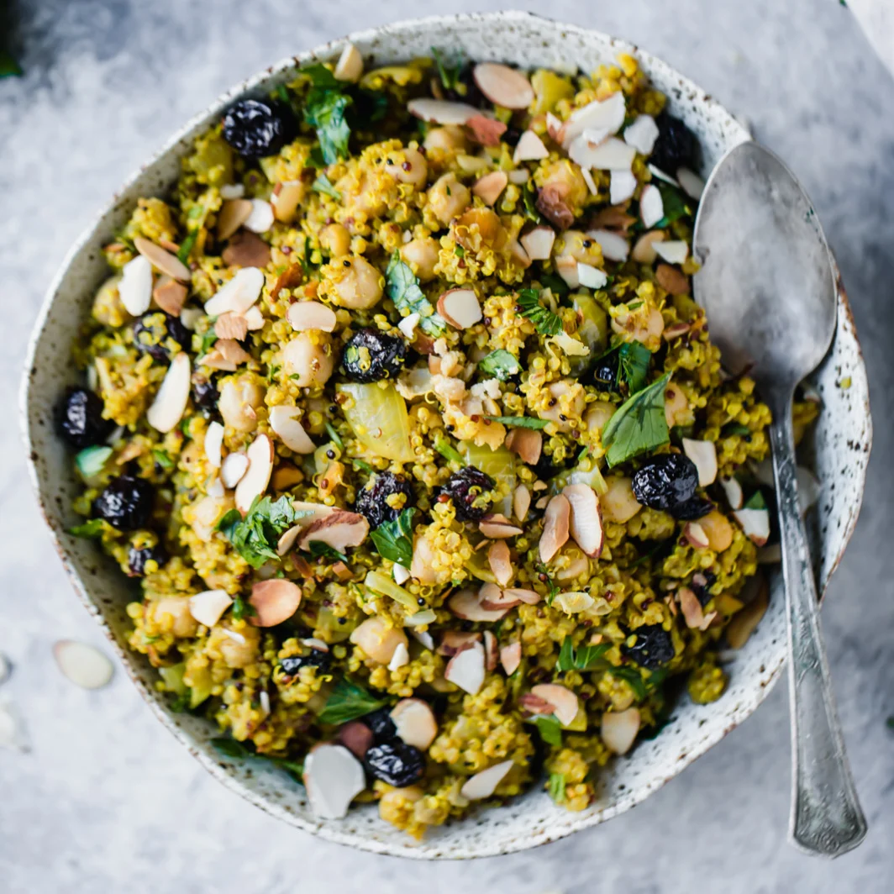
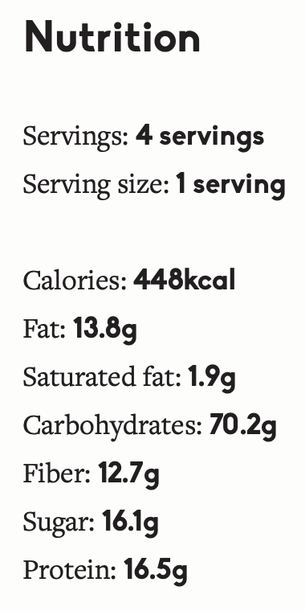

One Pot Moroccan-Inspired Chickpea Quinoa Salad

Sweet & savory 30-minute Moroccan-inspired chickpea quinoa salad made in one pot.
This vegan chickpea quinoa salad recipe packs plenty of plant-based protein and delicious, global flavors from cumin, turmeric and cinnamon. The perfect vegetarian meal to prep for lunch!
Ingredients in this Moroccan-inspired chickpea quinoa salad:
This incredible quinoa salad is like little pops of flavor dancing on my tongue with sweet pops of cranberry flavor and crunchy toasted nutty almonds all with the freshness of parsley in every bite. It’s also vegan & gluten free! Here’s what you’ll need to make it:
- 1/2 tablespoon coconut oil
- 1 teaspoon ground turmeric
- 1/2 teaspoon cumin
- 1/2 teaspoon cinnamon
- 1/2 teaspoon salt, plus more to taste
- Freshly ground black pepper
- 1 cup uncooked quinoa
- 2 cups vegetarian broth (or water)
- 1 (15 ounce) can chickpeas, rinsed and drained
- 2/3 cup dried cranberries
- 1/3 cup finely chopped flat leaf parsley
- 1/2 cup sliced toasted almonds (or smoked tamari almonds)
Instructions:
- Add coconut oil to a large pot and place over medium heat. Once oil is hot add in onion and sauté until onion is translucent, about 3-5 minutes. Stir in the following spices: turmeric, cumin, cinnamon and salt and pepper; cook for 30 seconds more.
- Next add in broth (or water) and quinoa; bring mixture to a boil, then cover, reduce heat to low and cook for exactly 15 minutes. After 15 minutes, remove from heat and fluff quinoa with a fork.
- Stir in chickpeas, cranberries and parsley to the quinoa and mix until well-combined. Taste and adjust seasonings. Garnish with toasted almonds and extra parsley. Serves 4.
- To serve: Place in mason jars or meal prep containers for lunch throughout the week. Garnish with extra toasted almonds.
Nutrition Information
The information shown is an estimate provided by an online nutrition calculator. It should not be considered a substitute for a professional nutritionist’s advice.

Recipe Source - ambitious kitchen